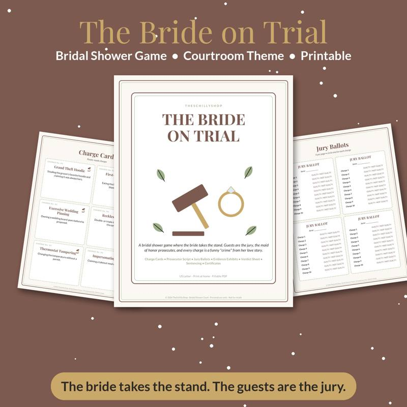
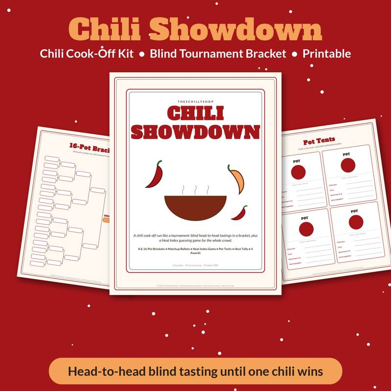
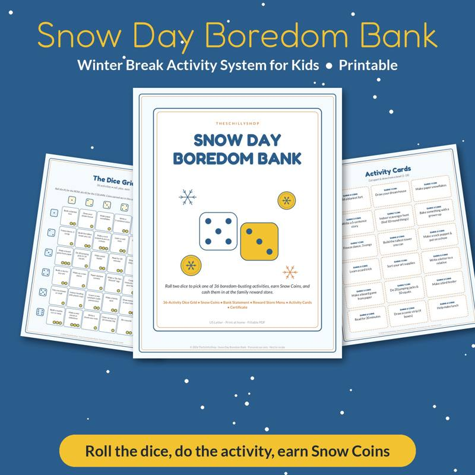
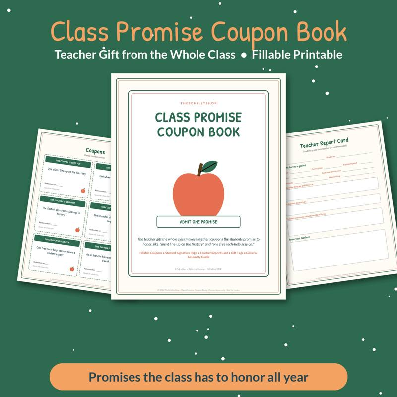
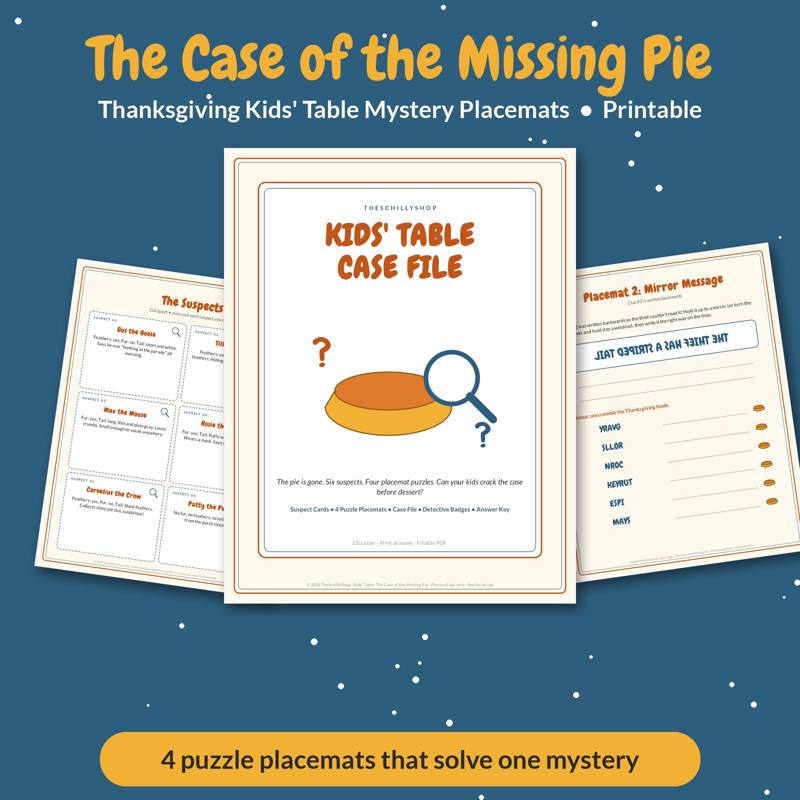
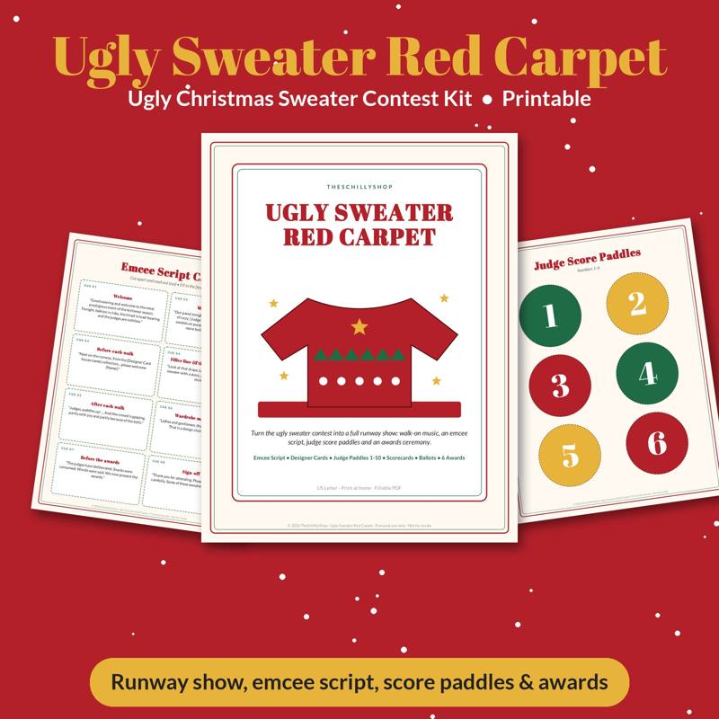

All guides

Baby Shower Prediction Game Ideas (and How to Run Them)
Baby shower prediction game ideas — birth date pools, weight and length guesses, look-alike predictions, keepsake cards and tips for scoring and prizes.

Bridal Shower Games That Aren't Cringe
Bridal shower games guests will actually enjoy — no embarrassing stunts. Ideas for mixed-age crowds, interactive games, keepsake activities and hosting tips.

Chili Cook-Off Rules and Scoring: A Complete Host Guide
How to run a chili cook-off — entry rules, blind tasting setup, scoring criteria, a sample score sheet, tournament bracket format and tips for a fair contest.

Christmas Party Games for Adults (No Supplies Needed)
14 Christmas party games for adults that need zero supplies — just people, a few minutes, and a willingness to be a little silly. Rules, tips and variations.

Cookie Exchange Party Ideas: How to Host a Christmas Cookie Swap
Everything you need to host a cookie exchange party — how many cookies to bake, invitation wording, swap rules, packaging, games and a host checklist.

A Family Chore System That Actually Works
How to build a family chore system that works — age-appropriate chores, chart formats, rewards versus allowance, motivation tips and how to keep it going.

Galentine's Party Games Your Friends Will Actually Love
Fun Galentine's party games for adults — icebreakers, guessing games, friendship trivia and low-key activities, plus hosting tips for a great girls' night.

The Meal Planning Game: How to Get Your Family to Help Plan Dinners
Turn weekly meal planning into a family game. A step-by-step system to involve kids, reduce picky eating battles and plan a week of dinners together.

New Year's Eve Family Traditions Kids Will Love
Fun New Year's Eve family traditions — early countdowns, time capsules, prediction games, reflection activities and food ideas that work for every age.

Snow Day Activities for Kids: 30 Ideas Indoors and Out
30 snow day activities for kids — outdoor snow games, indoor play, science experiments, crafts and calm-down ideas for when school is cancelled.

Teacher Gift Ideas From the Whole Class (Thoughtful and Budget-Friendly)
Group teacher gift ideas from the class — how to organize a class gift, collect contributions fairly, and meaningful ideas teachers actually appreciate.

Thanksgiving Kids Table Activities That Keep Them Busy
Easy Thanksgiving kids table activities for every age — screen-free ideas, table setups, games and crafts that buy the grown-ups a relaxed dinner.

Ugly Sweater Contest Ideas: Categories, Judging and Fun Twists
Ugly sweater contest ideas for office parties and family gatherings — award categories, fair judging methods, runway formats, DIY sweater tips and prize ideas.

Vacation Rental Cleaning Checklist: Room-by-Room Turnover Guide
A complete vacation rental cleaning checklist for short-term rental hosts — room-by-room turnover steps, restocking lists, deep-clean schedule and tips for faster turnovers.

Valentine's Escape Room for Couples at Home: How to Set One Up
How to create a Valentine's escape room for couples at home — puzzle ideas, setup steps, timing and tips for a memorable date night without going out.